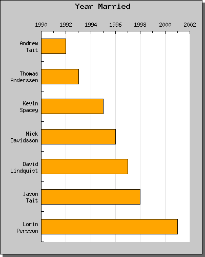

目次 前へ 次へ
数多くの値を表示したい時など、バー プロットを水平にした方が適している場合があります。JpGraph では直接水平バー プロットを使用できるわけではありませんが、通常の垂直バー プロットを 90 度回転させることで簡単にこの機能を実現できます。
以下に水平バー プロットのサンプルを掲載します。
水平バー プロットを作成するためには、このサンプルのコードを詳細まで理解する必要があります。
- 単にグラフを回転しているだけでなく、回転の中心を画像の中央に設定しています。 この理由は、標準設定では回転の中心点が プロット エリア の中央に設定されているからです。プロット エリアの中心は、完全なイメージの中心を必要としないので、指定された余白により回転は予言されにくい場合があります。 <
- プロット エリアのサイズは、もとの画像の幅と高さから余白を考慮して決定されます。プロット エリアが 90 度回転されると、左余白は上余白になります。これは回転したプロットの余白を概念的に指定したい場合、微妙な違いがあります。
さらに簡単な回転したイメージ付きの予覚の使用には、メソッド "Set90AndMargin()" の使用を勧めます。これは、明白な方法で余白を指定すると同様にイメージの回転を許可します。
最後に、3 種類の水平バー プロットのサンプルを掲載します。1 番目のサンプルでは、Y 軸が隠れており、2 番目のサンプルでは Y 軸を上部に表示しています。
3 番目のサンプルでは、ラベルを複数行に設定した場合の水平バープロットを掲載します。
 図 47:手動の整数スケールを持ち、複数行のラベルを持つ水平バープロット
[ソース]
目次 前へ 次へ